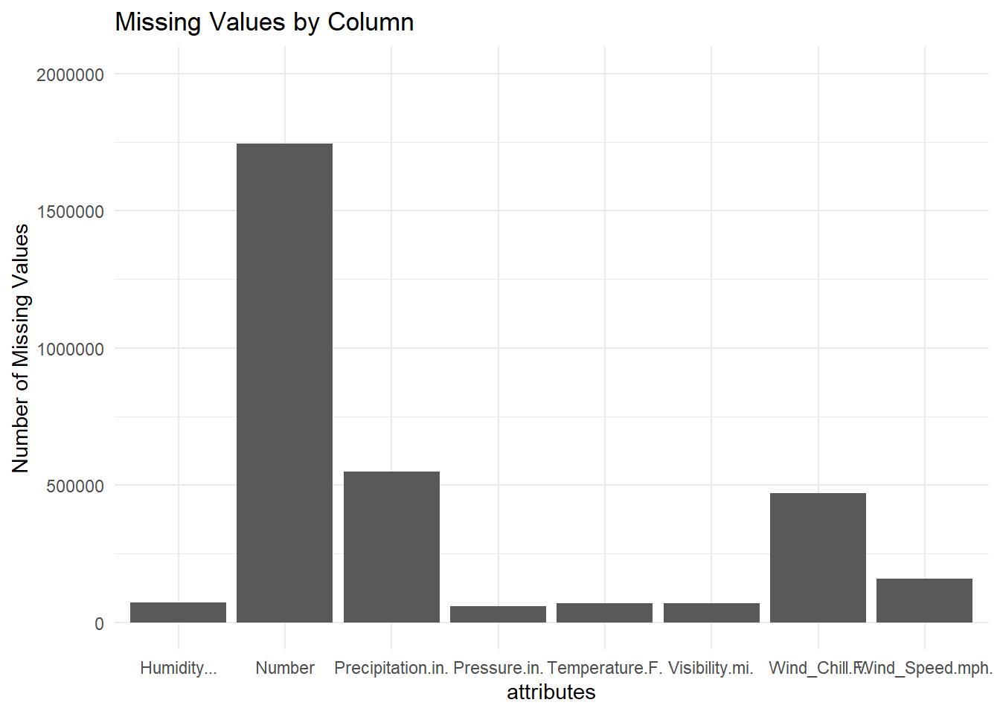
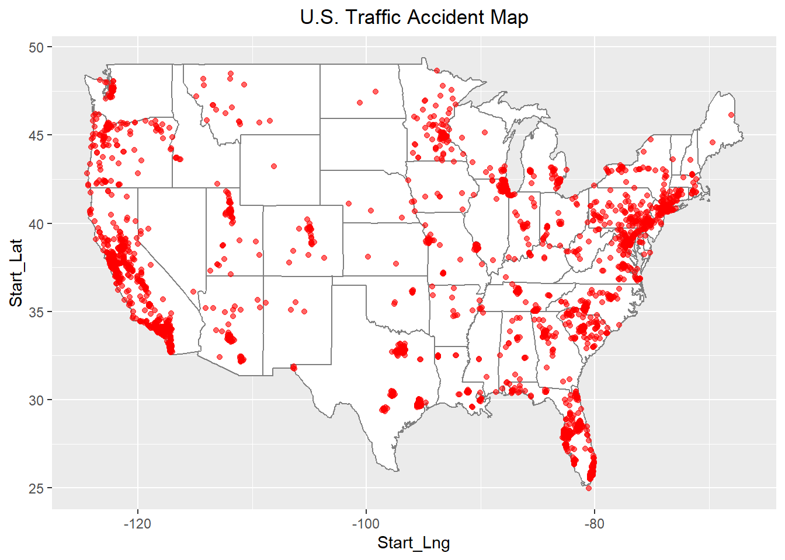
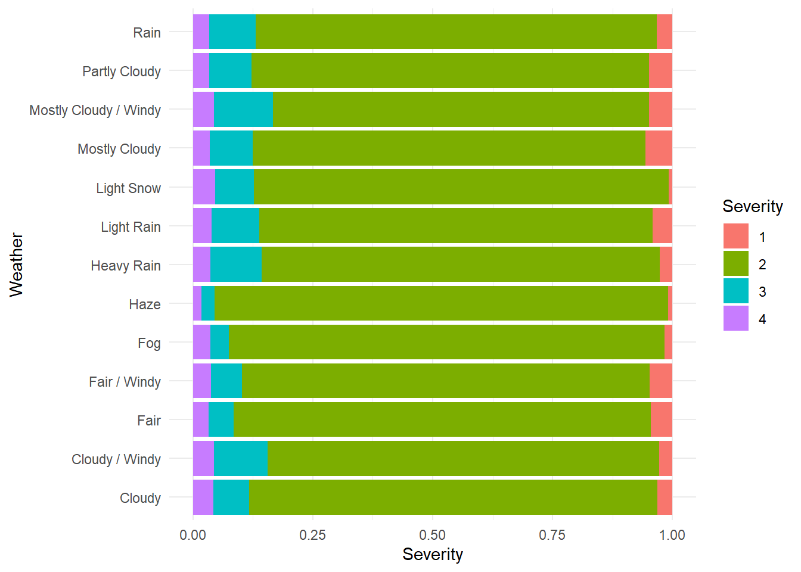
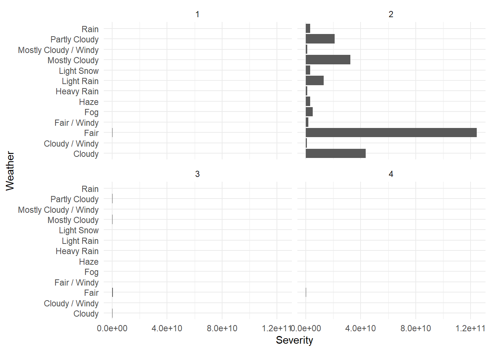
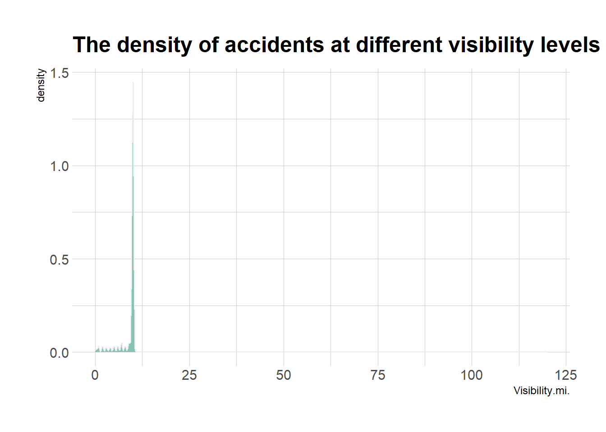
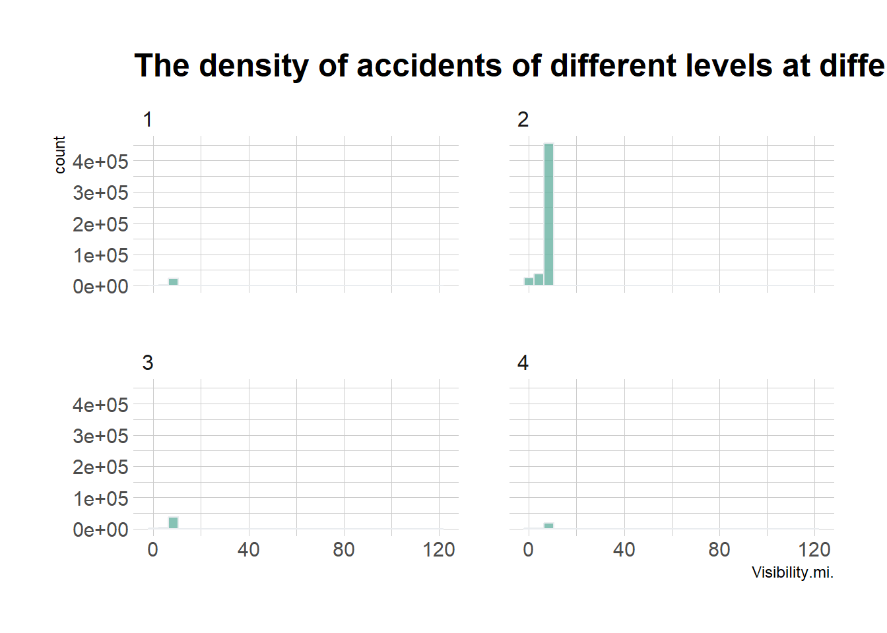
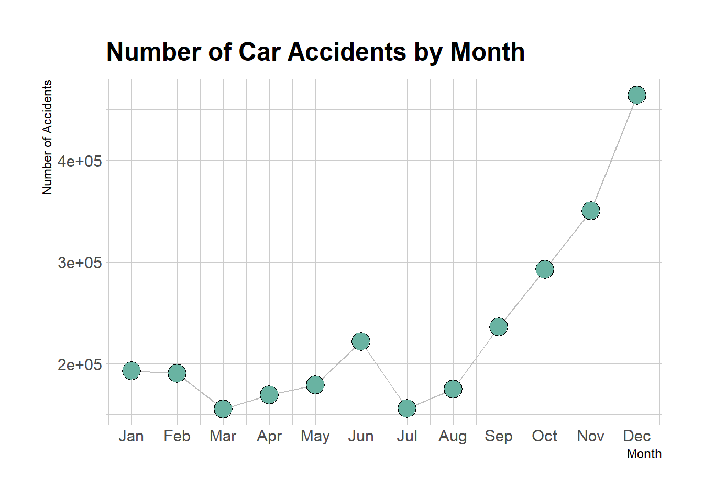
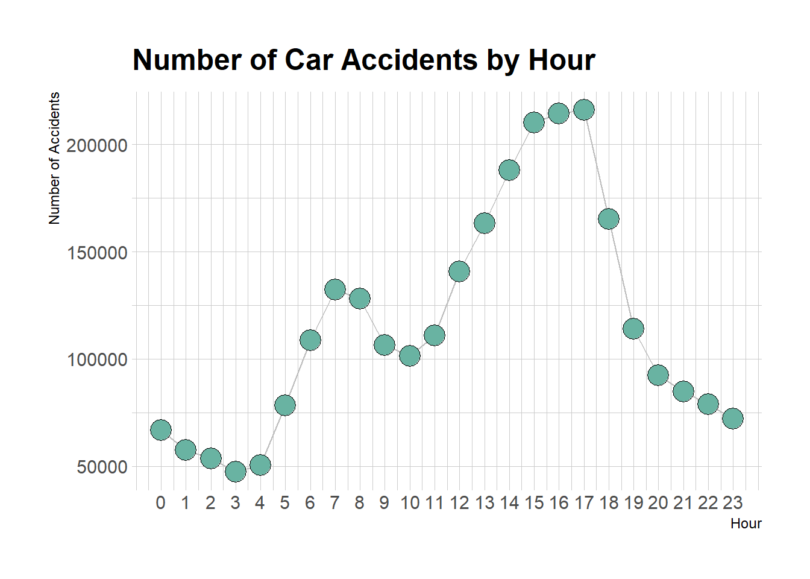
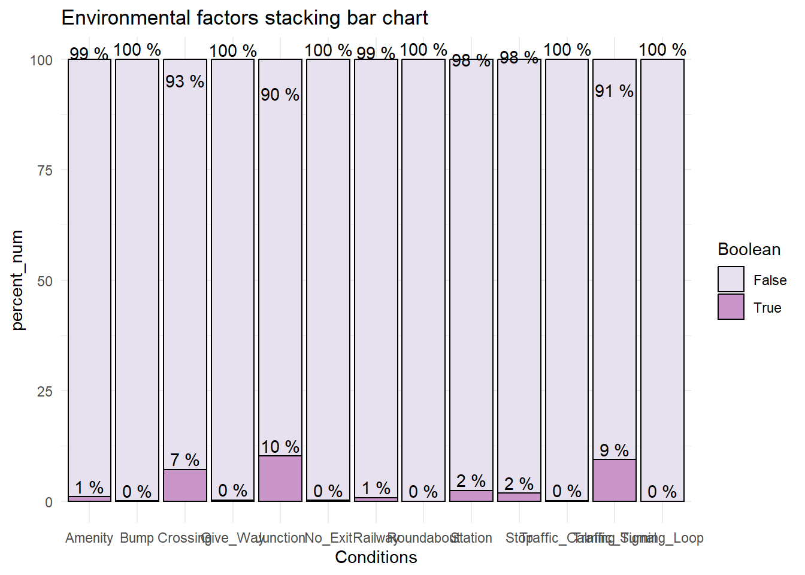

library(tidyverse)
knitr::opts_chunk$set(echo = TRUE, warning=FALSE, message=FALSE)Final Project
final_Project
Project & Data Description
Introduction
Every year the lives of approximately 1.3 million people are cut short as a result of a road traffic crash. Between 20 and 50 million more people suffer non-fatal injuries, with many incurring a disability as a result of their injury.
Road traffic injuries cause considerable economic losses to individuals, their families, and to nations as a whole. These losses arise from the cost of treatment as well as lost productivity for those killed or disabled by their injuries, and for family members who need to take time off work or school to care for the injured. Road traffic crashes cost most countries 3% of their gross domestic product.
In 2020, a total of 35,766 fatal car accidents occurred on roadways across the United States. Another 1,593,390 crashes resulted in injuries and 3,621,681 caused property damage. That means a total of 5,250,837 collisions happened over the course of a single year.Road crashes are the single greatest annual cause of death of healthy U.S. citizens travelling abroad.
source: https://www.who.int/news-room/fact-sheets/detail/road-traffic-injuries https://www.forbes.com/advisor/legal/car-accident-statistics/
The goal of this project was to statistically analyze this data to find the states with the most accidents and to find out when accidents are likely to occur. Summarize the information obtained from the analysis to tell a general story about the occurrence of accidents in the United States and to identify the factors that influence the occurrence of accidents and the severity of accidents.
Describe the data set(s)
This is a countrywide car accident dataset, which covers 49 states of the USA. The accident data are collected from February 2016 to Dec 2021, using multiple APIs that provide streaming traffic incident (or event) data. These APIs broadcast traffic data captured by a variety of entities, such as the US and state departments of transportation, law enforcement agencies, traffic cameras, and traffic sensors within the road-networks. Currently, there are about 2.8 million accident records in this dataset. dataset:https://www.kaggle.com/datasets/sobhanmoosavi/us-accidents
library(dplyr)
library(DMwR2)
library(lubridate)
library(zoo)
# install.packages('Rmisc')
library(Rmisc)
library(mice)
# install.packages('VIM')
library(VIM)
library(zoo)
library(reshape2)library(hrbrthemes)# import data
data <- read.csv("D:/Files/workspace/R/US_Accidents_Dec21_updated.csv")
head(data)check all of the attributes
colnames(data) [1] "ID" "Severity" "Start_Time"
[4] "End_Time" "Start_Lat" "Start_Lng"
[7] "End_Lat" "End_Lng" "Distance.mi."
[10] "Description" "Number" "Street"
[13] "Side" "City" "County"
[16] "State" "Zipcode" "Country"
[19] "Timezone" "Airport_Code" "Weather_Timestamp"
[22] "Temperature.F." "Wind_Chill.F." "Humidity..."
[25] "Pressure.in." "Visibility.mi." "Wind_Direction"
[28] "Wind_Speed.mph." "Precipitation.in." "Weather_Condition"
[31] "Amenity" "Bump" "Crossing"
[34] "Give_Way" "Junction" "No_Exit"
[37] "Railway" "Roundabout" "Station"
[40] "Stop" "Traffic_Calming" "Traffic_Signal"
[43] "Turning_Loop" "Sunrise_Sunset" "Civil_Twilight"
[46] "Nautical_Twilight" "Astronomical_Twilight"check the dimension of this dataset
dim(data)[1] 2845342 47Determine the number of unique elements
length(unique(data))[1] 47Check columns containing NA values
colSums(is.na(data)) ID Severity Start_Time
0 0 0
End_Time Start_Lat Start_Lng
0 0 0
End_Lat End_Lng Distance.mi.
0 0 0
Description Number Street
0 1743911 0
Side City County
0 0 0
State Zipcode Country
0 0 0
Timezone Airport_Code Weather_Timestamp
0 0 0
Temperature.F. Wind_Chill.F. Humidity...
69274 469643 73092
Pressure.in. Visibility.mi. Wind_Direction
59200 70546 0
Wind_Speed.mph. Precipitation.in. Weather_Condition
157944 549458 0
Amenity Bump Crossing
0 0 0
Give_Way Junction No_Exit
0 0 0
Railway Roundabout Station
0 0 0
Stop Traffic_Calming Traffic_Signal
0 0 0
Turning_Loop Sunrise_Sunset Civil_Twilight
0 0 0
Nautical_Twilight Astronomical_Twilight
0 0 Show the NA value amount for each attribute sort by descending order
mis_col <- colSums(is.na(data))
mis_col <- sort(mis_col,decreasing = TRUE)
mis_col Number Precipitation.in. Wind_Chill.F.
1743911 549458 469643
Wind_Speed.mph. Humidity... Visibility.mi.
157944 73092 70546
Temperature.F. Pressure.in. ID
69274 59200 0
Severity Start_Time End_Time
0 0 0
Start_Lat Start_Lng End_Lat
0 0 0
End_Lng Distance.mi. Description
0 0 0
Street Side City
0 0 0
County State Zipcode
0 0 0
Country Timezone Airport_Code
0 0 0
Weather_Timestamp Wind_Direction Weather_Condition
0 0 0
Amenity Bump Crossing
0 0 0
Give_Way Junction No_Exit
0 0 0
Railway Roundabout Station
0 0 0
Stop Traffic_Calming Traffic_Signal
0 0 0
Turning_Loop Sunrise_Sunset Civil_Twilight
0 0 0
Nautical_Twilight Astronomical_Twilight
0 0 Select the columns which have NA value
mis_col <- mis_col[mis_col>0]
mis_col Number Precipitation.in. Wind_Chill.F. Wind_Speed.mph.
1743911 549458 469643 157944
Humidity... Visibility.mi. Temperature.F. Pressure.in.
73092 70546 69274 59200 library(ggplot2)Show the type of mis_col
class(mis_col)[1] "numeric"mis_col_df <- data.frame(
attributes = names(mis_col),
missing_amount = mis_col
)
class(mis_col_df)[1] "data.frame"Show the processed dataframe,we can use it to draw a plot to display the missing values.
mis_col_dfDraw a bar chart to show the missing values. We can see there are 8 attributes own missing values.The attribute own most missing value is Number.
# Create the bar plot
ggplot(mis_col_df, aes(x = attributes, y = missing_amount)) +
geom_bar(stat = "identity") +
labs(title = "Missing Values by Column", x = "attributes", y = "Number of Missing Values") +
theme_minimal() +
ylim(c(0, 2000000))
First, traffic accident cases with more than 10% of the total number of missing variable values were removed, and a total of 63485 cases were removed here.
mis_row <- rowSums(is.na(data))/ncol(data) >=0.1
data_1 <- data[!mis_row, ]colSums(is.na(data_1)) ID Severity Start_Time
0 0 0
End_Time Start_Lat Start_Lng
0 0 0
End_Lat End_Lng Distance.mi.
0 0 0
Description Number Street
0 1700116 0
Side City County
0 0 0
State Zipcode Country
0 0 0
Timezone Airport_Code Weather_Timestamp
0 0 0
Temperature.F. Wind_Chill.F. Humidity...
7754 406158 11481
Pressure.in. Visibility.mi. Wind_Direction
2820 10728 0
Wind_Speed.mph. Precipitation.in. Weather_Condition
96262 491606 0
Amenity Bump Crossing
0 0 0
Give_Way Junction No_Exit
0 0 0
Railway Roundabout Station
0 0 0
Stop Traffic_Calming Traffic_Signal
0 0 0
Turning_Loop Sunrise_Sunset Civil_Twilight
0 0 0
Nautical_Twilight Astronomical_Twilight
0 0 dim(data_1)[1] 2781857 47And then, the missing values of street numberNumber, wind chill attribute Wind_Chill.F., precipitationPrecipitation.in.,wind speedWind_Speed.mph. and other attributes are too many, so these variables are removed.Then, the variables that are not related to the cause of the accident are removed.
data_del <- subset(data_1, select = -c(
ID,End_Time,End_Lat,End_Lng,Distance.mi.,Description,Number,Street,Side,City,County,Zipcode,Timezone,Airport_Code,
Weather_Timestamp,Temperature.F.,Wind_Chill.F.,Humidity...,Pressure.in.,Wind_Direction,Wind_Speed.mph.,
Precipitation.in.,Precipitation.in.,Civil_Twilight,Nautical_Twilight,Astronomical_Twilight,Sunrise_Sunset
))This is the data after cleaning.
dim(data_del)[1] 2781857 21colSums(is.na(data_del)) Severity Start_Time Start_Lat Start_Lng
0 0 0 0
State Country Visibility.mi. Weather_Condition
0 0 10728 0
Amenity Bump Crossing Give_Way
0 0 0 0
Junction No_Exit Railway Roundabout
0 0 0 0
Station Stop Traffic_Calming Traffic_Signal
0 0 0 0
Turning_Loop
0 Finally, the missing values of visibilityVisibility.mi.,because its values are concentrated in the range around the mean,so I decide to use the mean interpolation method.
Deal with the NA values
su_v <- summary(data_del$Visibility.mi.)
print(su_v) Min. 1st Qu. Median Mean 3rd Qu. Max. NA's
0.000 10.000 10.000 9.098 10.000 140.000 10728 #Mean interpolation
func_mean <- function(x){
x[is.na(x)] <- mean(x,na.rm = TRUE)
}data_del$Visibility.mi. <- sapply(data_del$Visibility.mi.,func_mean)# Write the modified data back to the original data frame
data_del[] <- lapply(data_del, function(x) {
if(is.numeric(x)) replace(x, is.na(x), mean(x, na.rm = TRUE)) else x
})We can see the result of completing the missing values below.There is no longer NA value exist.
colSums(is.na(data_del)) Severity Start_Time Start_Lat Start_Lng
0 0 0 0
State Country Visibility.mi. Weather_Condition
0 0 0 0
Amenity Bump Crossing Give_Way
0 0 0 0
Junction No_Exit Railway Roundabout
0 0 0 0
Station Stop Traffic_Calming Traffic_Signal
0 0 0 0
Turning_Loop
0 Here are the columns left after I finished processing.
colnames(data_del) [1] "Severity" "Start_Time" "Start_Lat"
[4] "Start_Lng" "State" "Country"
[7] "Visibility.mi." "Weather_Condition" "Amenity"
[10] "Bump" "Crossing" "Give_Way"
[13] "Junction" "No_Exit" "Railway"
[16] "Roundabout" "Station" "Stop"
[19] "Traffic_Calming" "Traffic_Signal" "Turning_Loop" dim(data_del)[1] 2781857 21Showing the overall of this dataset
print(summarytools::dfSummary(data_del,
varnumbers = FALSE,
plain.ascii = FALSE,
style = "grid",
graph.magnif = 0.70,
valid.col = FALSE),
method = 'render',
table.classes = 'table-condensed')Data Frame Summary
data_del
Dimensions: 2781857 x 21Duplicates: 173017
| Variable | Stats / Values | Freqs (% of Valid) | Graph | Missing | |||||||||||||||||||||||||||||||||||||||||||||||||||||||
|---|---|---|---|---|---|---|---|---|---|---|---|---|---|---|---|---|---|---|---|---|---|---|---|---|---|---|---|---|---|---|---|---|---|---|---|---|---|---|---|---|---|---|---|---|---|---|---|---|---|---|---|---|---|---|---|---|---|---|---|
| Severity [numeric] |
|
|
 |
0 (0.0%) | |||||||||||||||||||||||||||||||||||||||||||||||||||||||
| Start_Time [character] |
|
|
 |
0 (0.0%) | |||||||||||||||||||||||||||||||||||||||||||||||||||||||
| Start_Lat [numeric] |
|
1073698 distinct values |  |
0 (0.0%) | |||||||||||||||||||||||||||||||||||||||||||||||||||||||
| Start_Lng [numeric] |
|
1099565 distinct values |  |
0 (0.0%) | |||||||||||||||||||||||||||||||||||||||||||||||||||||||
| State [character] |
|
|
 |
0 (0.0%) | |||||||||||||||||||||||||||||||||||||||||||||||||||||||
| Country [character] | 1. US |
|
 |
0 (0.0%) | |||||||||||||||||||||||||||||||||||||||||||||||||||||||
| Visibility.mi. [numeric] |
|
76 distinct values |  |
0 (0.0%) | |||||||||||||||||||||||||||||||||||||||||||||||||||||||
| Weather_Condition [character] |
|
|
 |
0 (0.0%) | |||||||||||||||||||||||||||||||||||||||||||||||||||||||
| Amenity [character] |
|
|
 |
0 (0.0%) | |||||||||||||||||||||||||||||||||||||||||||||||||||||||
| Bump [character] |
|
|
 |
0 (0.0%) | |||||||||||||||||||||||||||||||||||||||||||||||||||||||
| Crossing [character] |
|
|
 |
0 (0.0%) | |||||||||||||||||||||||||||||||||||||||||||||||||||||||
| Give_Way [character] |
|
|
 |
0 (0.0%) | |||||||||||||||||||||||||||||||||||||||||||||||||||||||
| Junction [character] |
|
|
 |
0 (0.0%) | |||||||||||||||||||||||||||||||||||||||||||||||||||||||
| No_Exit [character] |
|
|
 |
0 (0.0%) | |||||||||||||||||||||||||||||||||||||||||||||||||||||||
| Railway [character] |
|
|
 |
0 (0.0%) | |||||||||||||||||||||||||||||||||||||||||||||||||||||||
| Roundabout [character] |
|
|
 |
0 (0.0%) | |||||||||||||||||||||||||||||||||||||||||||||||||||||||
| Station [character] |
|
|
 |
0 (0.0%) | |||||||||||||||||||||||||||||||||||||||||||||||||||||||
| Stop [character] |
|
|
 |
0 (0.0%) | |||||||||||||||||||||||||||||||||||||||||||||||||||||||
| Traffic_Calming [character] |
|
|
 |
0 (0.0%) | |||||||||||||||||||||||||||||||||||||||||||||||||||||||
| Traffic_Signal [character] |
|
|
 |
0 (0.0%) | |||||||||||||||||||||||||||||||||||||||||||||||||||||||
| Turning_Loop [character] | 1. False |
|
 |
0 (0.0%) |
Generated by summarytools 1.0.1 (R version 4.2.2)
2023-05-22
There are 21 attributes and 2781857 rows,it’s a really large size dataset. The attributes I’ll use in this project are:
Severity:Shows the severity of the accident, a number between 1 and 4, where 1 indicates the least impact on traffic. Start_Time:Shows start time of the accident in local time zone. Start_Lat:Shows latitude in GPS coordinate of the start point.
Start_Lng:Shows longitude in GPS coordinate of the start point. State:Shows the state in address field.
Country:Shows the country in address field.
Visibility.mi.:Shows visibility (in miles). Weather_Condition:Shows the weather condition (rain, snow, thunderstorm, fog, etc.) Amenity:A POI annotation which indicates presence of amenity in a nearby location
Bump:A POI annotation which indicates presence of speed bump or hump in a nearby location.
Crossing:A POI annotation which indicates presence of crossing in a nearby location.
Give_Way:A POI annotation which indicates presence of give_way in a nearby location. Junction:A POI annotation which indicates presence of junction in a nearby location.
No_Exit:A POI annotation which indicates presence of no_exit in a nearby location.
Railway:A POI annotation which indicates presence of railway in a nearby location.
Roundabout:A POI annotation which indicates presence of roundabout in a nearby location. Station:A POI annotation which indicates presence of station in a nearby location.
Stop:A POI annotation which indicates presence of stop in a nearby location.
Traffic_Calming:A POI annotation which indicates presence of traffic_calming in a nearby location.
Traffic_Signal:A POI annotation which indicates presence of traffic_signal in a nearby location. Turning_Loop:A POI annotation which indicates presence of turning_loop in a nearby location.
Total number of accidents by state
The total number of accidents by state for the period 2016-2021:
data_state <- data_del %>%
group_by(State) %>%
dplyr::summarize(count = n()) %>%
ungroup()
data_state <- data[order(data_state$count, decreasing = TRUE), ]
data_stateWe can see the three states with the highest number of traffic accidents are CA,FL and TX. CA is the largest state in the United States, prosperity must be accompanied by the development of traffic, and at the same time the number of traffic accidents will also increase.
The table doesn’t seem intuitive enough, so let’s draw it as a map.
# draw accident map
# install.packages('maps')
# install.packages('ggmap')
library(maps)
library(ggmap)
m <- borders("state",colour = "gray50",fill="white")
df2 <- data_del %>% select(Start_Lat,Start_Lng)
point <- df2[sample(nrow(df2),3000),]
p1 <- ggplot(point,aes(x=Start_Lng,y=Start_Lat)) + m
p1 + geom_point(color='red',alpha=.6) +
labs(title='U.S. Traffic Accident Map')+
theme(plot.title = element_text(hjust = 0.5))
The raw data includes data for the five-year period 2016-2021, with the six-year accident totals shown in the table below:
I use year() to process the Start_Time attribute let it switch as a new attribute year to show the data depend on year.Then group them to show the result.
data_del$year <- year(data_del$Start_Time)
summary(data_del$year) Min. 1st Qu. Median Mean 3rd Qu. Max.
2016 2020 2021 2020 2021 2021 colnames(data_del) [1] "Severity" "Start_Time" "Start_Lat"
[4] "Start_Lng" "State" "Country"
[7] "Visibility.mi." "Weather_Condition" "Amenity"
[10] "Bump" "Crossing" "Give_Way"
[13] "Junction" "No_Exit" "Railway"
[16] "Roundabout" "Station" "Stop"
[19] "Traffic_Calming" "Traffic_Signal" "Turning_Loop"
[22] "year" data_year <- data_del %>%
group_by(year) %>%
dplyr::summarize(count = n()) %>%
ungroup()
data_yearBecause this dataset is so large,so I will only choose 1 year of data to do the analysis.
data_2020 <- data_del[data_del$year == 2020, ]
head(data_2020)colnames(data_2020) [1] "Severity" "Start_Time" "Start_Lat"
[4] "Start_Lng" "State" "Country"
[7] "Visibility.mi." "Weather_Condition" "Amenity"
[10] "Bump" "Crossing" "Give_Way"
[13] "Junction" "No_Exit" "Railway"
[16] "Roundabout" "Station" "Stop"
[19] "Traffic_Calming" "Traffic_Signal" "Turning_Loop"
[22] "year" Influencing Factors
Weather condition and Serverity
First let’s focus on the relationship between the weather and the severity of the accidents.
The Weather_Condition and Severity variables in the data is presented for analysis. Transfer the data type of these 2 variables into factor type for the analisis later.
data_2020$Severity <- as.factor(data_2020$Severity)
data_2020$Weather_Condition <- as.factor(data_2020$Weather_Condition)Display all types of weather in the dataset.
table(data_2020$Weather_Condition)
Blowing Dust
2668 41
Blowing Dust / Windy Blowing Snow
55 65
Blowing Snow / Windy Cloudy
53 101362
Cloudy / Windy Drifting Snow
2147 1
Drizzle Drizzle / Windy
417 3
Drizzle and Fog Fair
27 283711
Fair / Windy Fog
4467 10772
Fog / Windy Freezing Drizzle
49 1
Freezing Rain Haze
5 6895
Haze / Windy Heavy Drizzle
179 26
Heavy Rain Heavy Rain / Windy
2731 201
Heavy Rain Shower Heavy Snow
3 261
Heavy Snow / Windy Heavy T-Storm
83 471
Heavy T-Storm / Windy Light Drizzle
44 1820
Light Drizzle / Windy Light Freezing Drizzle
42 22
Light Freezing Rain Light Freezing Rain / Windy
35 9
Light Rain Light Rain / Windy
31658 1227
Light Rain Shower Light Rain Shower / Windy
57 6
Light Rain with Thunder Light Sleet
712 11
Light Sleet / Windy Light Snow
2 7442
Light Snow / Windy Light Snow and Sleet
711 2
Light Snow and Sleet / Windy Light Snow Shower
3 2
Mist Mist / Windy
176 1
Mostly Cloudy Mostly Cloudy / Windy
78764 2557
N/A Precipitation Partial Fog
254 14
Partly Cloudy Partly Cloudy / Windy
50521 1415
Patches of Fog Patches of Fog / Windy
236 4
Rain Rain / Windy
7862 300
Rain Shower Sand / Dust Whirls Nearby
11 1
Shallow Fog Showers in the Vicinity
246 143
Sleet Sleet / Windy
12 1
Smoke Smoke / Windy
1785 24
Snow Snow / Windy
860 175
Snow and Sleet Snow and Sleet / Windy
10 9
Squalls / Windy T-Storm
12 1000
T-Storm / Windy Thunder
41 679
Thunder / Windy Thunder / Wintry Mix / Windy
24 2
Thunder and Hail Thunder in the Vicinity
1 754
Widespread Dust Wintry Mix
11 738
Wintry Mix / Windy
23 We can see the first one is blank,so we need to select valid weather type to analyze.Now we can see the count number of blank value be 0,it won’t affect the result anymore.
data_weather <- data_2020[data_2020$Weather_Condition !="", ]
table(data_weather$Weather_Condition)
Blowing Dust
0 41
Blowing Dust / Windy Blowing Snow
55 65
Blowing Snow / Windy Cloudy
53 101362
Cloudy / Windy Drifting Snow
2147 1
Drizzle Drizzle / Windy
417 3
Drizzle and Fog Fair
27 283711
Fair / Windy Fog
4467 10772
Fog / Windy Freezing Drizzle
49 1
Freezing Rain Haze
5 6895
Haze / Windy Heavy Drizzle
179 26
Heavy Rain Heavy Rain / Windy
2731 201
Heavy Rain Shower Heavy Snow
3 261
Heavy Snow / Windy Heavy T-Storm
83 471
Heavy T-Storm / Windy Light Drizzle
44 1820
Light Drizzle / Windy Light Freezing Drizzle
42 22
Light Freezing Rain Light Freezing Rain / Windy
35 9
Light Rain Light Rain / Windy
31658 1227
Light Rain Shower Light Rain Shower / Windy
57 6
Light Rain with Thunder Light Sleet
712 11
Light Sleet / Windy Light Snow
2 7442
Light Snow / Windy Light Snow and Sleet
711 2
Light Snow and Sleet / Windy Light Snow Shower
3 2
Mist Mist / Windy
176 1
Mostly Cloudy Mostly Cloudy / Windy
78764 2557
N/A Precipitation Partial Fog
254 14
Partly Cloudy Partly Cloudy / Windy
50521 1415
Patches of Fog Patches of Fog / Windy
236 4
Rain Rain / Windy
7862 300
Rain Shower Sand / Dust Whirls Nearby
11 1
Shallow Fog Showers in the Vicinity
246 143
Sleet Sleet / Windy
12 1
Smoke Smoke / Windy
1785 24
Snow Snow / Windy
860 175
Snow and Sleet Snow and Sleet / Windy
10 9
Squalls / Windy T-Storm
12 1000
T-Storm / Windy Thunder
41 679
Thunder / Windy Thunder / Wintry Mix / Windy
24 2
Thunder and Hail Thunder in the Vicinity
1 754
Widespread Dust Wintry Mix
11 738
Wintry Mix / Windy
23 Count the number of weather conditions by category and select the 20 most common types of weather
weather <- data_weather %>%
group_by(Weather_Condition) %>%
dplyr::summarize(count = n()) %>%
ungroup()weather <- arrange(weather,desc(count))
print(n=20,weather)# A tibble: 78 × 2
Weather_Condition count
<fct> <int>
1 Fair 283711
2 Cloudy 101362
3 Mostly Cloudy 78764
4 Partly Cloudy 50521
5 Light Rain 31658
6 Fog 10772
7 Rain 7862
8 Light Snow 7442
9 Haze 6895
10 Fair / Windy 4467
11 Heavy Rain 2731
12 Mostly Cloudy / Windy 2557
13 Cloudy / Windy 2147
14 Light Drizzle 1820
15 Smoke 1785
16 Partly Cloudy / Windy 1415
17 Light Rain / Windy 1227
18 T-Storm 1000
19 Snow 860
20 Thunder in the Vicinity 754
# … with 58 more rowsCount the number of cases by weather conditions, and select the cases with a number greater than 2000.Now just 13 weather type left.
weather <- filter(weather,count > 2000)
weather_13 <- weather$Weather_Condition
weather_13 [1] Fair Cloudy Mostly Cloudy
[4] Partly Cloudy Light Rain Fog
[7] Rain Light Snow Haze
[10] Fair / Windy Heavy Rain Mostly Cloudy / Windy
[13] Cloudy / Windy
79 Levels: Blowing Dust Blowing Dust / Windy ... Wintry Mix / WindyExtract the data from these 20 columns. %in% use to check if elements in the vector or set.
df_weather_1 <- filter(data_weather,Weather_Condition %in% weather_13)
df_weather <- subset(df_weather_1,select=c(Weather_Condition,Severity))Draw a bar plot to show the result:
ggplot(df_weather, aes(x=Weather_Condition, fill = Severity)) +
geom_bar(position = 'fill') +
labs(x = 'Weather', y = 'Severity') +
coord_flip() +
theme_minimal()
From the above chart, we can see that the most accidents occur in the weather conditions are mostly clouds, windy, snow or rain.The impact of light snow on the accident is relatively large and more likely to cause serious traffic accidents.
Next,I would like to know about each of these four different levels of traffic accidents:
Group the data according to the Severity and count the times
weather_count <- df_weather %>%
group_by(Severity) %>%
dplyr::summarize(count = n()) %>%
ungroup()I’d like use the count result as a attribute,so join th count result as a new column.
df_weather <- left_join(df_weather, weather_count, by = "Severity")
colnames(df_weather)[1] "Weather_Condition" "Severity" "count" Plot
ggplot(df_weather, aes(x=Weather_Condition, y= count)) +
geom_bar(stat="identity") +
labs(x = 'Weather', y = 'Severity') +
coord_flip() +
theme_minimal() +
facet_wrap(~Severity, ncol = 2)
We can see that severity equal to 2 has the highest number of accidents, far exceeding the other 3 severity type accidents. Among the accidents of class 2, the majority of accidents occurred in fair,cloudy,mostly cloudy,partly cloudy and light rain.
This is an unintended consequence of the fact that the number of crashes in FAIR weather is much higher than in other weather.
Visibility
Explore the impact on accident occurrence at different visibility levels
After the previous processing, there are no more missing values in this column.
data_vis <- subset(data_2020,select=c(Visibility.mi.,Severity))
sum(is.na(data_vis$Visibility.mi.))[1] 0Draw a Density graph to show the density of accidents at different visibility levels.
ggplot(data_vis,aes(x=Visibility.mi.)) +
geom_density(fill="#69b3a2", color="#e9ecef", alpha=0.8) +
ggtitle("The density of accidents at different visibility levels") +
theme_ipsum()
Through the analysis we can find that almost all traffic accidents occur in the visibility between 0 and 12.5, and are concentrated in the visibility of 10.
So I believe low visibility is the time when accidents are at their peak. Low visibility will lead to limited visibility for vehicles and pedestrians and not enough time to respond to emergencies, thus leading to accidents.
Next let’s take a look at the distribution of accidents with different levels of severity and visibility.
ggplot(data_vis,aes(x=Visibility.mi.)) +
geom_histogram(fill="#69b3a2", color="#e9ecef", alpha=0.8) +
ggtitle("The density of accidents of different levels at different visibility levels") +
theme_ipsum() +
facet_wrap(~Severity, ncol = 2)
The graph above shows that all four severity levels of crashes are concentrated at low visibility, although a non-negligible number of accidents with a severity level of 2 occur at below average visibility.
And it’s interesting that the number of accidents in this situation is higher than the number of accidents with the highest severity.
I think it may be that drivers reduce their speed and drive more cautiously when visibility is below average, so even if accidents do occur they are not particularly serious.
Time Factor
Next I will analyze the relationship between accidents and time factors, where I will analyze them in terms of months and hours respectively.
# adjust date format
data_time <- data_del
data_time$Start_Time <- as.POSIXct(data_time$Start_Time)
data_time$month <- month(data_time$Start_Time)
data_time$hour <- hour(data_time$Start_Time)head(data_time$month)[1] 2 2 2 2 2 2head(data_time$hour)[1] 0 5 6 6 7 8Group by month
# Month
df_month <- data_time %>%
group_by(month) %>%
dplyr::summarize(mon_count = n()) %>%
ungroup()Group by hour
# hour
df_hour <- data_time %>%
group_by(hour) %>%
dplyr::summarize(hour_count = n()) %>%
ungroup()Join mon_count and hour_count variables into data_time according the 2 common attributes: month and hour.
data_time <- left_join(data_time,df_month,by ="month")
data_time <- left_join(data_time,df_hour,by = "hour")
colnames(data_time) [1] "Severity" "Start_Time" "Start_Lat"
[4] "Start_Lng" "State" "Country"
[7] "Visibility.mi." "Weather_Condition" "Amenity"
[10] "Bump" "Crossing" "Give_Way"
[13] "Junction" "No_Exit" "Railway"
[16] "Roundabout" "Station" "Stop"
[19] "Traffic_Calming" "Traffic_Signal" "Turning_Loop"
[22] "year" "month" "hour"
[25] "mon_count" "hour_count" Draw a line graph to show the number of Car Accidents by Month
# Number of car accidents by month
# create a vector of month names
month_names <- month.abb
ggplot(data_time, aes(x=month, y=mon_count)) +
geom_line( color="grey") +
geom_point(shape=21, color="black", fill="#69b3a2", size=6) +
scale_x_continuous(breaks = 1:12, labels = month_names) +
labs(x = "Month", y = "Number of Accidents") +
ggtitle("Number of Car Accidents by Month") +
theme_ipsum()
As can be seen from the graph above, the number of accidents in the United States during 2016-2021 is significantly less in the first half of the year than in the second half of the year, and the number of accidents peaks in December.
Then let’s look at hours.
# Number of car accidents by hour
# create a vector of hour
hour_names <- 0:23
ggplot(data_time, aes(x=hour, y=hour_count)) +
geom_line( color="grey") +
geom_point(shape=21, color="black", fill="#69b3a2", size=6) +
scale_x_continuous(breaks = hour_names, labels = hour_names) +
labs(x = "Hour", y = "Number of Accidents") +
ggtitle("Number of Car Accidents by Hour") +
theme_ipsum()
From the above chart, it can be seen that the two peak periods of accidents occurring in a day are between 6-9 am and 2-6 pm, which is related to people’s daily life, such as people will focus on commuting to and from work and school during these two periods.
Road condition factor
For the influence of environmental factors such as road conditions on the occurrence of accidents, we select several logical variables to explore and draw a stacked bar chart of environmental factors as follows:
Select environmental factors.
df_road <- subset(data_del,select = c(Amenity,Bump,Crossing,Give_Way,Junction,No_Exit,Railway,Roundabout,Station,Stop,Traffic_Calming,Traffic_Signal,Turning_Loop))environment factors:
colnames(df_road) [1] "Amenity" "Bump" "Crossing" "Give_Way"
[5] "Junction" "No_Exit" "Railway" "Roundabout"
[9] "Station" "Stop" "Traffic_Calming" "Traffic_Signal"
[13] "Turning_Loop" Use rbind() and colSums() to calculate the column sums of True and False then use cbind() to create new columns for later plot.
df_road <- rbind(colSums(df_road=='True'),colSums(df_road=='False')) %>%
cbind(Boolean=c('True','False')) %>%
data.frame()head(df_road)The melt() function is applied to df_road to reshape it from a wide format to a long format.
data_env <- melt(df_road,
id.vars = 'Boolean',
variable.name = 'Conditions',
value.name = 'Accidents'
)
str(data_env) 'data.frame': 26 obs. of 3 variables:
$ Boolean : chr "True" "False" "True" "False" ...
$ Conditions: Factor w/ 13 levels "Amenity","Bump",..: 1 1 2 2 3 3 4 4 5 5 ...
$ Accidents : chr "27428" "2754429" "1010" "2780847" ...Accidents is character type data, converted to numeric type
data_env$Accidents <- as.numeric(data_env$Accidents)Calculate the percentage
env_plot <- ddply(data_env,'Conditions',transform,
percent_num = Accidents/sum(Accidents)*100)ggplot(env_plot,aes(x=Conditions,y=percent_num,fill=Boolean)) +
geom_bar(stat = 'identity',color='black')+
scale_fill_brewer(palette = 11)+
geom_text(aes(label=paste(round(percent_num),"%"),vjust=-0.3))+
labs(title='Environmental factors stacking bar chart')+
theme_minimal()
As can be seen from the above chart, traffic accidents mainly occur at crossing,Junction,Traffic_Signal and other places. These places are often more complex road conditions, traffic flow and human flow are relatively large, prone to traffic accidents. Especially crossroads, four directions of the car gathered here, compared to the ordinary road, the probability of collision greatly increased.
Conclusion
The state with the highest number of traffic accidents in the United States is California, and the number of traffic accidents is increasing every year.
The main factors that affect traffic accidents are weather, visibility, road conditions, and travel time. The better the weather, the low visibility and the worse the road conditions, the more frequent the accidents; The travel time is related to people’s life style. Therefore, the more developed the economy of each city, the more dense the traffic, the more accidents occur. When we go out, we need to pay attention to the road conditions, pay attention to vehicles and pedestrians at intersections, turn signs, etc.
References
https://rpubs.com/billantem/651903 https://towardsdatascience.com/usa-accidents-data-analysis-d130843cde02
Moosavi, Sobhan, Mohammad Hossein Samavatian, Srinivasan Parthasarathy, and Rajiv Ramnath. “A Countrywide Traffic Accident Dataset.”, 2019.
Moosavi, Sobhan, Mohammad Hossein Samavatian, Srinivasan Parthasarathy, Radu Teodorescu, and Rajiv Ramnath. “Accident Risk Prediction based on Heterogeneous Sparse Data: New Dataset and Insights.” In proceedings of the 27th ACM SIGSPATIAL International Conference on Advances in Geographic Information Systems, ACM, 2019